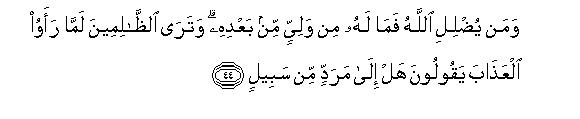

بسم الله الرحمن الرحيم
Sayyid Abul Ala Maududi - Tafhim al-Qur'an - The Meaning of the Qur'an
 42.
Surah Ash Shura (The Consultation)
42.
Surah Ash Shura (The Consultation)
It is derived frog the sentence, wa amru-hum shura baina hum, of verse 38, implying thereby that it is a Surah in which the word shura has occurred.
Although it could not be known from any authentic traditions, yet one feels after a study of its subject matter that this Surah might have been sent down consecutively after Ha-Miim As Sajdah, for it seems to be, in a way, a supplement to it. This will become clear to every person who first studies Surah Ha-Mim As Sajdah carefully and then goes through this Surah. He will see that in that Surah the Quraish chiefs had been taken to tack for their deaf and blind opposition so that anyone in Makkah and in its out-skirts, who had any sense of morality and nobility left in him, should know how unreasonably the chiefs of the people were opposing Muhammad (upon whom be Allah's peace), and as against them, how serious he was in everything he said, how rational was his standpoint and how noble his character and conduct. Immediately after that warning this Surah was sent down, which did full justice to teaching and instruction, and made the truth of the Holy Prophet's message plain in such an impressive way that anyone who had any element of the love of the truth in him and who had not been blinded by the errors of ignorance, could not help being influenced by it.
The discourse begins in a way as if to say:"Why are you expressing surprise and amazement at what Our Prophet is presenting before you?What he says is not new or strange, nor anything novel, which might have been presented for the first time in history: that Revelation should come down to a man from God and he should be given instructions for the guidance of mankind. Allah has been sending similar Revelations with similar instructions to the former Prophets before this. It is not surprising that the Owner of the Universe should be acknowledged as Deity and Ruler, but what is strange is that one should accept another as divine and deity in spite of being His subject and slave. You are being angry with him who is presenting Tauhid before you, where as the shirk that you are practicing with regard to the Master of the Universe is such a grave crime as may cause the heavens to break asunder. The angels are amazed at this boldness of yours and fear that the wrath of Allah might descend on you any moment."
After this the people have been told that a person's being appointed to Prophethood and his presenting himself as a Prophet does not mean that he has been made master of the people's destinies and he has come to the world with that very claim. Allah has kept the destinies in His own hand. The Prophet has come only to arouse the heedless and guide the strayed ones to the Right Path. To call to account those who do not listen to him and to punish or not to punish them is Allah's own responsibility. and not part of the Prophet's work. Therefore, they should take it out of their head that the Prophet has come with a claim similar to those that are made by their so called religious guides and saints to the effect that he who would not listen to them, or would behave insolently towards them, would be burnt to death: In this very connection, the people have also been told that the Prophet has not come to condemn them but he is their well wisher; he is warning them that the way they are following will only lead to their own destruction.
Then, an answer has been given to the question: Why didn't Allah make all human beings righteous by birth, and why did He allow the difference of viewpoint owing to which the people start following each and every way of thought and action?The answer given is this: Owing to this very fact has it become possible for man to attain to the special mercy of Allah, which is not meant for other dumb creatures, but is only meant for those endowed with power and authority, who should take Allah as Patron and Guardian not instinctively but consciously by willing choice. Allah supports the man who adopts this way and guides and helps him to do good and right and admits him into His special mercy. On the contrary, the man who misuses his option and makes his patron those who are not, in fact, the guardians, and cannot be, are deprived of divine mercy. In this connection, it has also been made clear that only Allah is the Patron of man and of all other creatures. Others are neither the patron nor have the power to do full justice to patronage. Man's success depends only on this that he should make no mistake in choosing a patron for himself by the use of his free choice, and should take only Him his Guide Who, in reality, is the real Patron.
After this, it has been explained what the Din being presented by the Holy Prophet Muhammad (upon whom be Allah's peace) really is:
Its primary basis that as Allah Almighty is the Creator, Master and real Patron of the Universe and Man, He alone is Man's Ruler, He alone has the right to give Man Faith (Din) and Law (system of belief and practice) and judge the disputes of man and tell what is Truth and what is falsehood. No other being has any right whatever to be man's lawgiver. In other words, like the natural sovereignty, the sovereignty with regard to lawmaking also is vested only in Allah. No man or creature, apart from Allah, can be the bearer of this sovereignty. And if a person does not recognize and accept this Divine rule of Allah, it is merely futile for him to recognize the natural sovereignty of Allah.
On this very basis has Allah ordained a Din (True Religion) for Man from the very beginning. It was one and the same Religion that was vouchsafed in every age to all the Prophets. No Prophet ever founded any separate religion of his own. The same one Religion has been enjoined by Allah for all Mankind since the beginning of creation, and all the Prophets have been following it and inviting others to follow it.
This Religion and Creed was not sent so that man may rest content only with believing in it, but it was sent with the purpose and intention that it alone should be introduced, established and enforced in the world, and no man made religion be made to prevail in Allah's earth apart from His Religion. The Prophets had not been appointed only to preach this Religion but to establish it particularly in the world.
This same was the original Religion of mankind, but after the death of the Prophets, selfish people created new creeds by creating schisms for vested interests due to self conceit, vanity and ostentation. All the different religions and creeds found in the world today have resulted from corruption of the original Divine Truth.
Now, the Holy Prophet Muhammad (upon whom be Allah's peace,) has been sent so that he may present before the people the same and original Religion in place of the various practices and artificial creeds and man made religions, and may try to establish the same. On this, if instead of being grateful, you feel angry and come out to fight him, it is your folly; the Prophet will not abandon his mission only because of your foolishness. He has been enjoined to adhere to his faith at all costs and to carry out the mission to which he has been appointed. Therefore, the people should not cherish any false hope that in order to please thee he would cater to the same whims and superstitions of ignorance which has corrupted Allah's Religion before.
You do not understand how great an impudence it is against Allah to adopt a man made religion and law instead of the Religion and Law enjoined by Allah. You think it is an ordinary thing and there is nothing wrong with it. But in the sight of Allah it is the worst kind of shirk and a grave crime whose punishment will be imposed on all those who enforced their own religion on Allah's earth and those who adopted and followed their religion.
Thus, after presenting a clear and visible concept of Religion it is said:"The best possible method that could be employed for your instruction and for bringing you to the Right Path has already been employed. On the one hand, Allah has sent down His Book, which is teaching you the truth in a most impressive way in your own language; and on the other, the lives of the Holy Prophet Muhammad (upon whom be Allah's peace) and his Companions are present before you by which you can see for yourselves what kind of men are prepared by the guidance given in this Book. Even then if you do not accept this guidance, nothing else in the world can bring you to the Right Path. The only alternative, therefore, is that you should be allowed to persist in the same error in which you have remained involved for centuries, and made to meet with the same doom which has been destined by Allah for such wrongdoers."
While stating these truths, brief arguments have been given, here and there, for Tauhid and the Hereafter, the world worshipers have been warned of the evil consequences and their punishment in the life hereafter, and the disbelievers have been criticized for the moral weaknesses, which were the real cause of their deviation from the truth. The Surah has been concluded with two important themes.
First, that the Holy Prophet was wholly unaware of this concept of the "Book" or the True Faith during the first forty years of his life and then his sudden appearance before the people with those two things, is a manifest proof of his being a Prophet.
Secondly, his presenting his own teaching as the teaching of God does not mean that he claims to have spoken to God, face to face, but God has conveyed to him this Guidance, as in the case of all other Prophets, in three ways: He speaks to His Prophets either through Revelation, or from behind a veil, or He sends an angel with the message. This thing was clarified so that the opponents did not have an opportunity of accusing the Holy Prophet of claiming to have spoken to God, face to face, and the lovers of the truth should know by what methods Allah gave instruction to the man whom He had appointed to the mission of Prophethood.
In the name of Allah, the Compassionate, the Merciful.

[1-6] Ha Mim Ain Sin Qaf. Likewise has Allah, the All-Mighty, the All-Wise, been inspiring you and those (Messengers) before you.1 Whatever is in the heavens and the earth is His. He is the High, the Great!2 Near it is that the heavens should break asunder from above.3 The angels are glorifying their Lord with His praise and begging forgiveness for those on the earth.4 Listen! Allah is indeed All-Forgiving, All-Merciful.5 Those who have taken some others than Him as guardians,6 Allah is watching them; you are not responsible for their conduct.7
[7] Yes, thus have We revealed to you, O Prophet, this Arabic Qur'an8 so that you may warn those who dwell in the center of habitations (i.e. Makkah) and around it,9 and warn them of the Day of Gathering10 that which is sure to come. One group shall go to Paradise and the other to Hell.
[8-9] Had Allah so willed, He would have made all of them a single nation, but He admits into His mercy whomever He wills; and the wrongdoers have neither any protector nor helper.11 What! Have (the foolish people) taken other guardians besides Him? Guardian is Allah alone: He alone gives life to the dead, and He has power over everything.12
[10-12] It13 is for Allah to give judgment in whatever you may differ.14 The same Allah15 is my Lord: in Him did I put my trust, and to Him I turn.16 He is the Creator of the heavens and the earth, Who made for you pairs from your own kind, and pairs also of the cattle (from their own kind) so as to multiply you. There is nothing like Him in the universe.17 He hears everything and sees everything.18 To Him belong the keys of the treasures of the heavens and the earth. He gives abundantly to whomsoever He wills and sparingly to whomsoever He wills: He has knowledge of everything.19
[13] He has appointed for you the same Way of life which He had ordained for Noah and which (O Muhammad) We have now revealed to you; and which We had already enjoined on Abraham and Moses and Jesus, stressing: "Establish this Way and be not divided in it."20 The same thing to which you (O Muhammad) are calling the mushriks has set them ill at ease. Allah chooses for Himself whomever He wills, and He guides to His Way only him who turns to Him (in penitence).21
[14] The people became divided only after the Knowledge had come to them22 just because they wanted to wrong one another.23 Had your Lord not already issued the Word to defer their punishment till an appointed time, the matter would surely have been settled between them.24 And the fact is that those who were made to inherit the Book after them, are involved in a disquieting doubt concerning it.25
[15] Because of this, therefore, O Muhammad, you should call them to the same Way, and hold fast to it yourself as you have been commanded, and do not follow their whims.26 Say to them, "I have believed in whatever Book Allah has sent down,27 and I have been commanded to do justice between you.28 Allah is our Lord as well as your Lord. For us are our deeds and for you your deeds.29 There is no dispute between us.30 Allah shall gather us all together one day and to Him we shall all return."
[16] After Allah's invitation has been accepted, those who dispute (with those who have accepted it) concerning Allah's religion,31 their argument is absurd in the sight of their Lord, and on them is His wrath and for them there is a severe punishment.
[17-18] It is Allah Who has sent down this Book with the truth and the Balance.32 And what will make you understand that the Hour of Judgment might well have drawn near at hand?33 Those who do not believe in its coming, seek to hasten it, but those who believe in it, dread it, and know that it is sure to come. Note it well that those who dispute concerning the coming of the Hour, in order to create doubts about it, have gone far astray.
[19-20] Allah is very Kind to His servants.34 He gives whatever He pleases to whom He wills.35 He is the All-Powerful, the All-Mighty.36 Whoever seeks the harvest of the Hereafter; We do increase his harvest; and whoever seeks the harvest of this world, We do give kiln of it here, but in the Hereafter he will have no share whatever.37

[21-23] Have they set up such associates of God, who have laid down for them a (religious) way of life, which Allah has not permitted?38 Had the word of judgment not already been issued, their case would long have been settled.39 Surely for these wrongdoers there is a painful torment. You will see that at that time these wicked people will be fearing the consequence of their deeds, and it will certainly befall them. Contrary to this, those who have believed and done righteous deeds, shall be in the Gardens of Paradise: they shall have with their Lord whatever they will desire. This is the greatest bounty. This is that of which Allah gives good news to His servants, who believed and did good works. O Prophet, say to them: "I do not ask of you any reward for this work.40 However, I do seek the love of the kindred."41 Whoever earns a good deed, We shall increase its good for him. Indeed, Allah is All-Forgiving and Appreciative.42
[24-26] Do they say, "He has forged a lie against Allah?"43 If Allah so wills, He may seal up your heart.44 He blots out falsehood and proves the truth to be true by His Words.45 He even knows the secrets hidden in the breasts.46 It is He Who accepts repentance from His servants and overlooks sins although He knows whatever you do.47 He answers the prayers of those who believe and do good works and gives them even more out of His bounty. As for the disbelievers, there is a severe punishment for them.
[27-35] If Allah had given His provisions abundantly to all His servants, they would have rebelled in the earth, but He sends down in due measure what He wills. He is well informed of His servants and watches over them.48 He it is Who sends down the rain when the people have lost all hope, and spreads His mercy, and He alone is the Praiseworthy Guardian.49 Among His Signs is the creation of the heavens and the earth and the living things, which He has scattered in both.50 He can gather them all together whenever He wills.51 Whatever affliction has befallen you, it is for what your own hands have earned, and there is many a sin that He pardons.52 You cannot frustrate your God in the earth, and you do not have any protector and helper against Allah. Among His signs are the ships which look like mountains in the sea. If Allah so wills He can still the wind and leave them motionless on its back. -In this there arc many signs for every such person who patiently endures and is grateful.53 Or, forgiving many of the sins (of the voyagers), He may drown them in consequence of a few of their misdeeds, and then those who dispute about Our Revelations, may realize that they have no refuge.54
[36-43] Whatever you have been given, is merely a provision for the transitory life of this world,55 and that which is with Allah is better as well as more lasting.56 That is for those who have believed and put their trust in their Lord.57 Who refrain from gross sins and indecencies.58 Who, when they are angry, forgive.59 Who obey their Lord,60 establish the Salat, and conduct their affairs by mutual consultation.61 Who spend out of what We have given them as sustenance.62 Who, when they are oppressed, help and defend themselves.63 The recompense64 of evil is a like evil,65 then whoever pardons and seeks reconcilement, his reward is with Allah.66 Allah does not like the wrongdoers.67 And those who avenge themselves after they have been wronged, cannot be held blameworthy, for blameworthy indeed are those who oppress others and commit excesses in the land without any right. For such people there is a painful torment. However, the one who practices patience and is forgiving. these indeed are works of great courage and resolution.68

[44-46] The one whom Allah lets go astray, has no protector after Him.69 You will see that when the wrongdoers see the torment, they will say. "Is there any way back?"70 And you will see that when they are brought before Hell, they shall be downcast with disgrace and shall look at it with stealthy glances.71 At that time those who had believed, will say, "The real losers indeed are those who have lost themselves and their followers on this Resurrection Day." Beware! The wrongdoers shall suffer an everlasting torment, and they will have no protectors and guardians, who could come to their help against Allah. The one whom Allah lets go astray has no way of escape.
[47-48] Answer your Lord before there comes the Day of which there is no chance of being averted by Allah.72 On that Day you will have no place of refuge, nor will there be any who could change your condition.73 Now if they turn away. We have not sent you, O Prophet, to be a keeper over them.74 Your only responsibility is to convey the Message. Man is such that when We let him taste Our mercy, he exults at it, and if an evil befalls him in consequence of what his own hands have done before, he turns utterly ungrateful.75
[49-50] To Allah belongs the Kingdom of the heavens and the earth.76 He creates whatever He wills: He gives daughters to whom He wills, and sons to whom He wills; or He gives both sons and daughters to whom He wills and makes barren whom He wills. Indeed. He knows everything and has power over everything.77

[51-53] It78 is not given to any mortal that Allah should speak to him, face to face. He speaks either through revelation (secret instruction),79 or from behind a veil,80 or He sends a messenger (an angel), who by His Command, reveals whatever He wills.81 He is the Exalted, the All-Wise.82 Even so We have, (O Muhammad), revealed a Spirit to you by Our Command.83 You did not know at all what was the Book and what Was the Faith,84 but We made that Spirit a light by which We show the way to any of Our servants We will. You are indeed guiding to the Right Way, the Way of God, to Whom belongs everything in the heavens and the earth. Beware! All affairs tend to Allah alone!85
1The style of the opening verses by itself shows that in the background there are the misgivings, wonder and amazement which were being expressed at that time in every assembly, every meeting place, every street and every house and shop of Makkah at the message of the Holy Prophet and the themes of the Qur'an. The people said, "Where from is this man bringing us new revelations everyday? The like of these we had never heard nor seen before. How strange that he rejects as false the religion that our forefathers have been following in the past, the religion that is still being followed by all of us, and the traditions and ways that have been prevalent in the country for so many centuries; and he says that the religion that he presents only is right and true." They said: `Had he presented even this new religion in a way as to substitute some of the falsehood he found in the ancestral paganism and prevalent customs with certain others which might be the result of his own thought, there could be a dialogue with him. But he says that what he recites is Divine Word. How can we accept this? Does God visit him, or does he visit God? Or does some dialogue take place between him and God?" It is in the background of such expression of wonder and doubt that although the address is apparently directed to the Holy Prophet, the disbelievers have in fact been told: "Yes: these very things are being revealed by the Almighty, All-Wise Allah, and with the same themes has its Revelation been coming down to all the former Prophets."
Lexically, wahi means "swift and secret instruction", i.e. an inspiration which is made with such haste and speed that none may know it except the inspirer and the one being inspired. As a term this word has been used for the guidance and instruction that is put in the mind of a man by Allah like a flash of lightning. What is meant to be said here is this: `There is no question of Allah's visiting somebody or somebody's visiting Allah and speaking face to face with Him. He is All-Mighty and All-Wise. Whenever He pleases to have a contact with a servant for the guidance and instruction of mankind, nothing can obstruct His will and intention, for He adopts the method of revelation for the purpose by His wisdom. " This very theme has been repeated in the last verses of the Surah with greater clarity and detail.
As to the people's objection that the Holy Prophet was presenting strange and novel things, it has been said: There is nothing strange and novel in what Muhammad (upon whom be Allah's peace) presents; Allah has been giving the same guidance and instruction to the Prophets who came before him in the world. "
2These introductory sentences are not meant to be said merely in praise of Allah Almighty, but their each word has a deep link with the background in which these verses were sent down. The foremost basis of the objections of the people who were expressing wonder and doubts against the Holy Prophet and the Qur'an was that he was inviting them to Tauhid and they were being alarmed at this and saying that if Allah alone is the Creator, Sustainer and Ruler, what would be the position of their saints and holy men? At this it has been said: "This whole Universe belongs to Allah. How can therefore the godhead of another work and operate in the kingdom of the real Sovereign, particularly when those others whose godhead is acknowledged, are themselves also His subjects?" Then, it has been said: `He is the High, the Great!" That is, He is far above that somebody else should be equal to Him in rank and should became His associate in His Being, attributes, powers or rights."
3That is, "It is not a trivial matter that a creature should be joined in lineage with Allah and regarded as His son or daughter; another regarded as fulfiller of the needs and the answerer of the petitions so that the people should start invoking him for help; another taken as the maintainer of the entire world, and his devotees should start proclaiming that their holy saint heard the prayer of everyone at all places at all times and Games to his help and answers his petition; another invested with the authority to enjoin and prohibit things and declare them as lawful and unlawful, and the people should start obeying his commands, instead of the Commands of God, as if he alone was their God. These boldnesses against God arc such that they may well cause the heavens to break asunder. " (This same theme has also been presented in Surah Maryam: 88-91 above).
4It means: `The angels shudder with disgust when they hear such nonsense being uttered by the people in respect of their Lord, and they regard it as a rebellion against Him." They say: `Glorified be Allah! No one can have the position that he should become an associate with Allah, Lord of the worlds, in Divinity and Command; there is none beside Him who may be our and all other servants' benefactor so that hymns be sung in his praise and he be thanked. " So, they feel that it is a grave crime being committed in the world, and it may provoke Allah Almighty's wrath any moment. Therefore, they implore Allah for mercy again and again for the dwellers of the earth, who have forgotten themselves and their God, and pray that they may yet be spared from the torment and given more respite to mend their ways.
5That is , "It is only Allah's clemency, mercifulness and forgiveness that the people who have touched the extreme limits in disbelief, polytheism, atheism, sinfulness and tyranny, have been receiving respite after respite for years and years, even for centuries; yet they not only go on receiving their sustenance but arc also acclaimed as the great people of the world and they are provided with such adornments of the worldly life as cause the ignorant people the misunderstanding that this world perhaps has no God. "
6The word auliya (sing. wall) as used in the Text is very comprehensive in meaning. The different beliefs and all sorts of diverse practices with regard to the false deities held and worshiped by the polytheistic people, have been described as "taking others as auliya' (guardians) instead of Allah" in the Qur'an. According to the Qur'an, a person takes such a one his wali:
(1) whom he obeys in all matters, whose instructions he carries out and Whose ways and customs and rules he follows in all affairs of life (An-Nisa: 118-120; Al A'raf: 3, 27-30);
(2) in whose guidance he has full faith, and who he thinks will lead him aright and save him from error and deviation (Al-Baqarah: 257, Bani Isra'il: 97, Al-Kahf: 17-50, AI-Jathiah: 19);
(3) about whom he trusts he will protect him from the torment of God in the Hereafter if it really existed (An Nisa: 123, 173; Al-An'am: 51, Ar-Ra'd: 37, AI-'Ankabut: 22, AI-Ahzab: 65, Az-Zumar: 3);
(4) about whom he has the belief that he helps him in the world in supernatural ways, protects him from disaster and afflictions, gets him jobs, blesses him with children, and fulfills his desires and all other needs. (Hud: 20, Ar-Ra'd: 16, Al-`Ankabut: 4l).
At some places in the Qur'an the word wali has been used in one of these senses and at others in all its meanings. The verse being commented upon is one of such verses. In it, taking others as guardians instead of Allah implies regarding them as one's patron and supporter and helper in all the four about-mentioned meanings.
7"Allah is watching them": Allah sees whatever they arc doing and is recording their conduct. It is His responsibility to call them to account and punish them. As for the words "You are not responsible for their conduct", these have been addressed to the Holy Prophet. They mean: "Their destiny has not been placed under yow control so that you may burn to ashes anyone who does not listen to you, or depose him from power, or annihilate him." This, however, does not mean that, God forbid, the Holy Prophet regarded himself as such, and this was said in order to remove his misunderstanding or self-conceit, but this was meant for the disbelievers. Although apparently the Holy Prophet himself is the addressee, the real object is to tell the disbelievers that the Prophet of Allah has made no such claims as were usually made by their so-called saints who posed to possess great spiritual powers. Among the ignorant people it is generally thought that the so-called "holy men" have the power to ruin the destiny of anyone who behaves insolently towards them in any way; so much so that even after their death if somebody happened to dishonor their grave, or if nothing else, only nursed an evil thought about them in his mind, they destroyed him completely. Such a thought is in most casts spread by the "holy men" themselves. As for the good men who do not themselves say any such thing, their names are exploited by some other clever people, who spread such thoughts about them in order to promote their business. In any case this is regarded as a necessary corollary of spirituality and piety among the common people that one should possess the powers of making and marring destinies. To destroy the spell of this same fraud, Allah is addressing His Holy Messenger, as if to tell the disbelievers: "You are no doubt Our Messenger and We have blessed you with Our Revelations, but yow duty is only to guide the people to the Right Path. Their destinies have not boon placed under yow control; they arc in Our hand; therefore, to watch over the deeds and acts of the servants and to punish or not to punish them is Our own responsibility."
8The same thing which had been said in the beginning of the discourse has been said again with greater emphasis, and by making mention of the "Arabic Qur'an", the listeners have been warned to the effect: "The Qur'an is not in any foreign language but in your own language: you can understand it yourself directly; study its themes and see for yourself that the pure and selfless guidance that is being given in it can be from none other than the Lord of the Universe."
9That is, "Arouse them from slumber and warn them that there is nothing but destruction in store for them in consequence of the errors of morality and conduct in which they are involved and of the perverse principle on which they have ordered their individual and collective lives."
10That is, "Tell them also that this destruction is not confined only to this world but the Day has to come when Allah will gather together all mankind and subject them to accountability. Even if a person escaped the evil consequences of his deviation and wickedness in the world, there will be no chance of his escape on that Day, and highly unfortunate is he, who is doomed to a tragic fate both in this world and in the Hereafter."
11This theme has three objects in this context:
First, it is meant to instruct and console the Holy Prophet, as if to say: "Do not grieve so much at the ignorance and deviation of the disbelievers of Makkah and their stubbornness and obduracy. It is Allah's will that man should be granted the freedom of choice and action: then whoever desires to have guidance should be given guidance, and whoever wants to remain. astray should be allowed to go astray. Had this not been Allah's will, there was no need whatever of sending the Prophets and the Book; for this only a creative hint of Allah Almighty's was enough: all human beings would have become as obedient as the rivers, mountains, trees, stones, and all other creatures. " (In this connection, please also see AI-An'am: 35-36, 107).
Secondly, its addressees arc all those people who were involved in the confusion, and even now are, that if Allah really had wanted to show guidance to human beings and He did not like the differences of creed and practice that were prevalent among the people, and wanted to have the people adopt the way of the Faith and Islam, there was no need of the Revelation and the Book and the Prophethood. He could have easily achieved this object by creating everyone a believer and Muslim by birth. Another result of this confusion was also this reasoning: "When Allah has not done so, the different ways that we are following, are approved by Him, and whatever we are doing, is according to His wilt. Therefore, nobody has any right to object to it. " (To remove this misunderstanding also this theme has been mentioned at several places in the Qur'an. Please see Al-An'am: 112, 137, 148-149; Yunus : 99; Hud: 118-119; An-Nahl: 9, 35 and the relevant E.N.'s).
Thirdly, its object is to make the believers realize the truth about the difficulties that one generally faces in the way of preaching religion and reforming the people. Those people who do not understand the reality of the God, given freedom of choice and will and of the resulting differences of temperament and methods, sometimes become despondent at the slow progress of the reformatory work and wish that some supernatural things should appear from Allah, which should change the hearts of the people, and are sometimes inclined to adopt unsound methods of bringing about reformation, owing to excessive enthusiasm. (For this object also this theme has occurred at some places in the Qur'an, for which see Ar-Ra'd: 31, An-Nahl: 91-93).
To highlight these objects a very important theme has been expressed in these brief sentences. Allah's real vicegerency in the world and His Paradise in the Hereafter is not an ordinary blessing, which may be distributed over creatures of the rank of the earth and stones and donkeys and horses as a common blessing. This is indeed a special blessing and a blessing of a very high order for which even the angels were not considered fit. That in why Allah created man as a creature endowed with power and authority and placed vast means of His earth under his control and blessed him with these special powers so that he may pass through the test, success in which alone can entitle a servant to His blessings. This blessing, is Allah's own; no one has a monopoly over it, nor can anyone claim to have it on the basis of a personal right, nor has anyone the power to take it by force. He who presents service before Allah, who takes Him as his Guardian and comes under His protection, alone can have it. Then Allah blesses him with help, guidance and grace to pass this test, so that he may enter His Mercy. As for the unjust Man who turns away from Allah Himself and instead takes others as his patrons, Allah-Has no need that he should become his guardian by force. And the others whom He takes as his guardians do not possess any knowledge and power and authority that they may enable him to achieve success by dint of their guardianship of him.
12That is, "Guardianship is not a thing of one's personal choice and satisfaction that one may take anyone one may please as one's guardian, and the other may also become ones real and true guardian and may do full justice to the function of guardianship. This is an actual reality, which does not change with the whims of the people; the Guardian is He Who is really the Guardian, whether someone regards and acknowledges Him as his Guardian or not, and the one who is not in reality the ,guardian is not the guardian, no matter whether someone continues to regard and acknowledge him as his guardian till the last moment. Now, as for the question: What is the proof of only Allah's being the real Guardian and of no one else's being the guardian? the answer is: Man's real Guardian can be the one who changes death into life, who has created a living man by breathing life into inorganic substances, and who also possesses the powers and authority to do full justice to the function of Guardianship. If there is such a one, apart from Allah, he may be made the guardian, and if He is Allah alone, then taking another beside Him as one's guardian is nothing but ignorance and folly and self-destruction.
13From here to the end of verse 12, though the whole discourse is a Revelation from Allah, the speaker is not Allah but the Holy Messenger of Allah. In other words, Allah Almighty is telling His Prophet to make this proclamation to the people. Such themes in the Qur'an sometimes begin with qul (say, O Prophet) and sometimes without it. only the style indicates that the speaker at a place is not Allah but Allah's Messenger. Even at some places though the words are Allah's, the speaker arc the believers, as for example in Surah AI-Fatihah; or, the speaker are the angels as in Surah Maryam: 64-65.
14This is the natural and logical demand of Allah Almighty's being the Master of the Universe and His being the real Guardian. When Sovereignty and Guardianship belong to Him only inevitably He alone is also the Ruler, and it is for Him to judge human beings' mutual disputes and differences. Those who restrict it only to the Hereafter make a mistake. There is no argument to prove that Allah's position as a Ruler has no effect in this world but is meant only for the life hereafter. Likewise, those who restrict it only to beliefs and a few questions of "religious nature" are also in the wrong. The words arc general and they clearly proclaim Allah as having the sole right to judge all disputes and differences. According to them, just as Allah is the Master of the Day of Judgment in the Hereafter; so He is the best of Judges in this world too; and just as He is the Settler of the differences pertaining to beliefs as to what is the Truth and what is falsehood, so also in legal matters He is the Settler of differences as to what is pure for man and what is impure. what is lawful and desirable for him and what is forbidden and undesirable, what is evil and vicious in morals and what is good and virtuous, what arc the rights of the people in their mutual dealings and what are the right practices in social political and economic life and what arc wrong. On this very basis the Qur'an has declared this principle as the fundamental of law:
"If there arises any dispute between you about anything, refer it to Allah and the Messenger. " (An-Nisa: 59). And: "It does not behoove a believing man and a believing woman that when Allah and His Messenger have given their verdict in a matter, they should exercise an option in that matter of theirs." (AI-Ahzab: 36). And: “O people, follow what has been sent down to you from your Lord and do not follow other patrons beside Him." (AI-A'raf: 3).
Then, in the context in which this verse has occurred, it gives another meaning also and it is: 'To decide differences is not only Allah's legal right on accepting or rejecting which depends man's being a believer or an unbeliever, but Allah, in fact, practically also is deciding between the truth and falsehood due to which falsehood and its worshipers are ultimately being destroyed and the truth and the faithful are being honored and exalted, no matter how delayed the enforcement of this decision may seem to be. This theme occurs in verse 24 below, and has been expressed at several places above in the Qur'an. For this please see Ar-Ra'd: 17, 41; Ibrahim: 24-27; Bani Isra'il 81; AI-Anbiya': 18, 44; and the E N.'s.
15"The same Allah", Who is the real Settler of disputes.
16These arc two verbs one of which is in the past tense and the other in the present which contains the sense of perpetuity. In the past verb it was said: "In Him did I put my trust," i.e.. "I decided once and for all that as long as I live I have to rely on His help, on His guidance, on His support and protection, and on His decision." Then in the present verb it was said: "To Him I turn," i.e. "Whatever situation I face in lift, I turn only to Allah in it. I do not look towards others in an affliction or trouble or difficulty but invoke only Him for help; I Beck only His refuge when I face a danger and depend on His protection; I turn to Him' for guidance whenever I am confronted by a problem and seek its solution in His teaching and guidance; and I look up only to Him when I have a dispute with somebody with the belief that He alone will give the final decision, and have the faith that whatever decision He gives will be the right one. "
17Literally, "Nothing is like His likeness," which implies this: Even if there were a likeness of Allah, nothing would be like it not to speak of being like unto Allah Himself.
18That is, "At one and the same time He is hearing everybody and seeing everything in the Universe. "
19These are the arguments to prove why Allah alone is the true Guardian and why putting trust in Him alone is right and correct and why He alone should be turned to in all matters. (For explanation, see An-Naml: 60-66, Ar-Rum: 20-22 and the E.N.'s).
20Here the same thing as already mentioned in the first verse has been further elaborated. It clearly states that Muhammad (upon whom be Allah's peace) is not the founder of any new religion, nor was any of the Prophets a founder of a separate religion, but it has been one and the same Religion which all the Prophets have been presenting from Allah from the very beginning, and the same is being presented by Muhammad (upon whom be Allah's peace). In this regard, the first name mentioned is of the Prophet Noah, who was the first Prophet after the Flood. After him the Holy Prophet Muhammad (upon whom be Allah's peace) has been mentioned, who is the last of the Prophets; then the Prophet Abraham has been mentioned, whom the Arabs acknowledged as their guide, and last of all, the Prophets Moses and Jesus have been mentioned to whom the Jews and the Christians attribute their religions. This does not mean that only these five Prophets had been enjoined this Religion, but what is meant to be said is that all the Prophets who came to this world, brought one and the same Religion and the names of the five illustrious Prophets have been mentioned only as examples through whom the world received the most well known codes of Divine Law.
As this verse throws important light on Din (Religion) and its aim, it is necessary that we should study it to understand it well.
Lexically, the word shara'a in shara'a !a kum (ordained for you) means to make the way. As a term it implies appointing a way, a code and a rule. Accordingly , in Arabic the words tashri' ` and shari'at and shari' arc understood as the synonyms of legislation and law and law giver respectively. This Divine legislation, in fact, is the natural and logical result of the fundamental truths which have been stated in verses l, 9 and 10 above: that Allah alone is the Owner of everything in the Universe, and He alone is man's real Guardian and it is for Him to judge the disputes that arise between human beings. Now, when Allah alone is the Owner and Guardian and Ruler, inevitably He alone is entitled to make the code of law for man and it is His responsibility that He should give this code of law to man. So, He has carried out His responsibility like this.
Then the words min-ad-din (of the nature of din) denote that the way appointed by Allah is legislation pertaining to din. If the explanation of the word din that we have given in E.N. 3 of Surah Zumar above, is kept in view, there can be no difficulty in understanding that din means nothing but acknowledging the sovereignty and leadership of someone and obeying his commands. And when this word is used in the meaning of the way, it implies the way which man must regard as obligatory for himself to follow and the one appointing it as the one whom he ought to obey. On this basis, calling God-appointed Way as legislation pertaining to din clearly means that it is not merely recommendatory in nature or a mere counsel, but it is a law enjoined by the Master, which must necessarily be obeyed by the servants and disobedience of which is tantamount to rebellion, and the one who does not obey it, in fact, denies Allah's being the Sovereign and Ruler and his own position of a servant.
Then, it has been said that this legislation which pertains to din is the same as was enjoined on Noah. Abraham and Moses (peace be upon them all) and the same now has been enjoined on Muhammad (upon whom be Allah's peace). This contains several points:
(1) That Allah did not send this legislation of His directly to every man, but appointed Whenever He deemed proper and necessary a person as His Messenger and consigned the legislation w him;
(2) that this legislation has been the same from the beginning: it did not so happen that in one age one particular din was appointed for a nation, and in another age another and contradictory din was sent for another nation. Allah did not send many dins but on every occasion He sent one and the same din;
(3) that it is an essential part of this din to acknowledge the apostleship of those men through whom the legislation has been sent and the Revelation in which the legislation has been couched, besides acknowledging the Sovereignty of Allah; and it is the demand of reason and logic too, that it should be a necessary part of it, for a man cannot obey this legislation at all unless he is satisfied that it is authentically from Allah.
Then it has been said that the Prophets were given this legislation pertaining to din ", with the express instruction: "Aqim-ud-din "; "Establish this din", or "Keep this din established," as variously translated by Shah Waliullah, Shah Rafi'uddin and Shah `Abdul Qadir. Both these translations are correct, for iqamat means both to establish and to keep established, and the Prophets were appointed to perform both the functions. Their first duty was to establish this din wherever it was not established, and the second that they should keep it established after they had established it, or had found it already established in a place. Obviously, a thing can be kept established only when it has already been established, otherwise the primary requirement would be to establish it first, and then make continuous effort to keep it established.
Here, two questions arise : First, what is the meaning of establishing the din? Second, what is din itself, which we have been enjoined to establish and then keep it established? Let us try to understand these questions well.
The word iqamat (to establish) when used in respect of a material or physical object implies causing it to rise from the sitting or lying positions or assembling the scattered parts of a thing and raising it up high. But when iqamat is used in respect of a thing which is not material but spiritual in nature it does not merely imply preaching it, but also acting according to it as best as one can, introducing it and enforcing it practically. For example, when we say that so and-so established his rule, it does not mean that he invited others to his government but that he subdued the people of the land and organized the different departments of the government in a way that the administration of the country began to function according to his orders. Similarly, when we say that courts have been established in the country, it means that judges have been appointed to do justice and they ate hearing the cases and giving judgments, and not that hymns in praise of justice arc being sung and the people being impressed. Likewise, when the Qur'an enjoins the establishment of the Prayer (Salat), it does not imply that one should merely preach and exhort others to the Prayer but that one should not only perform it oneself, observing all its conditions, but should also strive to make arrangement so that it becomes a' regular practice among the believers. There should be mosques, there should be arrangements for offering the Prayer collectively and for the Friday congregational Prayer, and for making calls to the Prayer punctually; there should be the Imams to lead the Prayers and the scholars to give sermons, and the people should visit the mosques regularly and punctually and make offering the Prayer an essential part of their daily routine. After this explanation, there should remain no difficulty in understanding that when the Prophets were enjoined to establish the din and to keep it established, it did not simply mean that they. should practice it themselves and not even this that they should preach it to others so that the people may accept its truth, but also that when the people have accepted it, steps should be taken to introduce and enforce the entire din practically among them so that they may start living according to it for ever afterwards. No doubt preaching is the primary necessary stage of this work without which there can be no second stage, but every intelligent person can himself see that in this Command preaching has not been made the object, but the real object is to establish the din and keep it established. Preaching is certainly a means to the end but not the end in itself, but nobody can say that it was the only and foremost object of the mission of the Prophets.
Now, Iet us take the second question. When some people saw that the din which has been enjoined to be established is common among all the Prophets, and their shari'ahs have been different, as Allah Himself says: "We appointed for each community among you a law and a way of life", they formed the view that inevitably this din did not imply the shari' ah commandments, rules and regulations but only the acceptance of Tauhid, the Hereafter and the Book and the Prophethood and performance of certain acts of devotion to Allah, or at the most, it included some of the major moral principles which have been common to all the shari ahs. But this is a superficial view, which has been formed after having a cursory glance over the unity of religion and the difference of the shari'ahs. This is, however, a dangerous view, which if not corrected in time, may well lead to the separation between din (religion) and shari'ahs (law). It was this very view in, which St. Paul was involved, who presented the doctrine of the din (religion) without shari'ah (law), and corrupted the community of the Prophet Jesus (peace be upon him). For, if shari'ah (law) is something separate from din (religion) and the command is only for establishing the din and not the shari'ah, inevitably the Muslims also, like the Christians, would regard the shari ah as unimportant and overlook its establishment as not being the real object by itself, and would remain content with only beliefs and a few important moral principles. Instead of determining the meaning of din from such speculations, Iet us turn to the Qur'an itself and see whether the din which we have . been enjoined here to establish unplies the beliefs and a few important moral principles only, or the shari'ah values and commandments as well. When we explore the Qur'an we find that what it regards as din includes the following things as well:
(1) "And the only Command they were given was to worship Allah, making their din sincerely His, turning all their attention towards Him, and to establish the ,salat and to pay the Zakat.' this alone is the true and right din. " (Al-Bayyinah: 5). This shows that the Salat and the Zakat are included in this din. whereas the commandments .pertaining to both have been different in the different shari ahs. No one can say that in all the previous shari ahs the Salat has had the same form, the same elements, the same mumber of the rak ahs, the same direction of the giblah, the same times and the same other commands concerning it. Likewise, no one can claim also about the Zakat that in all the shari ahs the same has been the exemption limit, the same rates and the same injunctions concerning its collection and distribution. But in spite of the difference of the shari'ahs, Allah has regarded both these as part of din.
(2) 'You are forbidden carrion and blood, the flesh of swine and of that animal which has been slaughtered in any other name than of Allah, and of the strangled animal, and of that beaten to death or killed by a fall or gored to death or mangled by a beast of prey---save of that you duly slaughtered while it was still alive - and of that which is slaughtered at (ungodly) shrines. It is also unlawful for you to try to find your fortune by means of divining devices, for all these things are sinful acts. Today the disbelievers have despaired of (vanquishing) your religion; therefore do not fear them but fear Me. Today I have perfected your din for you and completed My blessing on you and approved Islam as the din (way of life) for you." (Al-Ma'idah: 3). This shows that all these shariah commandments are also din.
(3) Fight with those from among the people of the Book, who do not believe in Allah nor in the Last Day; who do not make unlawful what Allah and His Messenger have made unlawful, and do not adopt the right din as their din. " (At-Taubah: 29). This shows that besides belief in Allah and the Hereafter it . is also din to accept and follow the Commands about the lawful and the unlawful, which have been given by Allah and His Messenger.
(4) "The woman and the man guilty of fornication, flog each one of them with a hundred stripes, and let not any pity for them restrain you in regard to a matter prescribed in the din of Allah, if you believe in Allah and the Last Day." (An-Nur: 2). "It did not behoove Joseph to seize his brother by the king's din. " (Yusuf: 76). This shows that the criminal law is also din. If a man follows the criminal law prescribed by God, he is a follower of God's din and if he follows a king's law, he is a follower of the king's din.
These are the four specimens in which the shari'ah commandments have been described as din in clear words. But, besides these, a careful study shows that the eradication of the sins for which Allah has held out the threat of Hell (e.g. adultery, taking of interest, killing of a believer, consuming the property of the orphan, taking possession of the other peoples properties in unlawful ways etc.), and the crimes which become the cause of God's torment, e.g. sodomy (the act of Lot's people) and dishonesty in business dealings (as practiced by the Prophet Shu'aib's people) should necessarily be included in din, for if din cannot save one from Hell and Allah's torment, what use could it be ? Likewise, those shari'ah commandments also should be part of the din violation of which has been regarded as cause of entry into the Fire, e.g. injunctions relating to inheritance, after stating which it has been said: "And whoever disobeys Allah and His Messenger and transgresses the limits prescribed by Him, Allah will cast him into the Fire wherein he will have a disgraceful torment." (An-Nisa: 14,). Likewise, the prohibition of those things whose prohibition Allah has mentioned with great emphasis and absoluteness, e.g. prohibition of the mother, sister and daughter and prohibition of wine, theft, gambling, false evidence, etc. if not included in the establishment of the din, it would mean that Allah has given some unnecessary Commands also, which are not meant to be introduced and enforced. Similarly, establishing those things which Allah has made obligatory, e g. fasting and pilgrimage; cannot be excluded from the establishment of din only on the pretext that the 30 fasts of Ramadan had not been enjoined in the previous shariah, and pilgrimage to the Ka'bah was enjoined only in the Shariah which was inherited by the Ishmaelite branch of the Prophet Abraham's progeny.
As a matter of fact, the misunderstanding was caused only because the verse: "We appointed for each community among you a law and a way of life", has been misconstrued to mean that since the shari'ah appointed for every community was separate. and the command given was only to establish the din (way of life) which was common to all the Prophets, the establishment of the shari ah was not included in the establishment of the din, whereas the real meaning of this verse is just the opposite of it. If the context (vv. 41-50) in which this verse has occurred in Surah AI-Ma'idah is studied carefully, it will be seen that the correct meaning of this verse is: Whatever shari 'ah was given by Allah to the community of a Prophet, was the din for that community, and the establishment of the same din was the object during his Prophethood. And since now is the period of the Holy Prophet Muhammad's Prophethood, the shariah which has been given to the Ummah of Muhammad (upon whom be Allah's peace) is the din of this time, and to establish the same is to establish the din. As for the difference of the shariah, it does not mean that the shari 'ahs sent by God were mutually contradictory, but it means that in their details there have been some differences owing to the different environments, take, for instance, the Prayer and the Fast. The Prayer has been obligatory in all the shari'ahs, but the qiblah of all the shariahs was not the same, and there was a difference in its times and rakahs and elements as well. Likewise, the Fast was obligatory in every shari'ah, but the 30 fasts of Ramadan were not there in the other shariahs. From this it is not correct to conclude that the Prayer and the Fast as such are included in the establishment of din but performing the Prayer in a particular way and observing the Fast at a particular time is excluded from it. However, the correct conclusion that one can draw is: To perform the Prayer and observe the Fast according to the rules and procedures that had been appointed for the people in the shari'ah of every Prophet amounted to establishment of din in his time. In the present age the establishment of the din is that these acts of worship be performed according to the procedures enjoined in the Shari 'ah of the Prophet Muhammad. The same is true about all other Shari'ah commandments as well.
Whoever studies the Qur'an carefully will see that this Book does not envisage that its adherents will live as subjects of the disbelievers and will pass a religious lift under them, but it openly proclaims that it will have its own rule established; it demands from its followers that they should struggle with their lives for the intellectual, cultural, legal and political supremacy of the true Faith; and it gives them a program for the reformation of human life, the major part of which can be acted upon only when political power and authority is in the believers' hand. As stated by itself, the object of this Book's being sent down is: "We have sent down this Book to you with the Truth so that you may judge between the people in accordance with the light that Allah has shown you. " (An-Nisa: 105). The Commandments given in this Book about the collection and distribution of the Zakat expressly envisage a government who should be responsible for collecting the Zakat and distributing it among the deserving people according to a laid down procedure. (At-Taubah;60,103). The prohibition of interest that has been enjoined in this Book aad the declaration of war that has been made against those who do not abstain from taking interest (AI-Baqarah: 27_5-279) can be enforced only when the political and economic system of the country is entirely in the believers' hand. The Law of Retribution for murder (AI-Baqarah: 178), cutting off of the hand for theft (AI-Ma'idah 38) and carrying out of the prescribed punishment for adultery and calumny (An-Nur: 2-4) have not been enjoined on the assumption that the believers will remain subject to the police and courts of the disbelievers. The Command to fight the disbelievers (AlBaqarah: 190, 216) has not been given with the idea that the followers of this din will carry out this Command by getting enlisted in the army of disbelief. The command to take Jizyah from the followers of the former Books (At-Taubah: 29) has not been given on the assumption that the Muslims will take Jizyah from them while being their subjects and will be responsible for their protection. And this thing is not true only about the Madinite Surahs; in the Makkan Surahs as well a discerning eye can clearly see that the scheme envisaged from the very beginning was of Islam's supremacy and dominance and not of Islam's and the Muslims' subjugation under an un-Islamic rule. See, for instance, Bani Isra`il: 76-89; AlQasas: 85-86; Ar-Rum: 1-6; As-Saaffat: 171-179; Suad: Introduction, v. 11 and E.N. 12 on it.
Above all, this misinterpretation clashes with the great work that the Holy Prophet himself accomplished during the 23 years of his Prophethood. Who can deny the fact that he subdued entire Arabia by means of both preaching and the sword and established in it a full fledged system of government with a detailed law, covering all aspects of life, from beliefs and rites of worship to personal conduct, collective morality, culture and civilization, economic and social life, politics and judiciary, peace and war. If this entire work of the Holy Prophet is not accepted as a commentary of the Command of "iqamat din " (establishment of din) which, according to this verse, he had been enjoined to undertake like all other Prophets, then it could have one of the two meanings: That earlier, God forbid, the Holy Prophet should be blamed that he had been appointed only to preach and teach beliefs and a few important moral rules but he exceeded his mandate and established a government of his own whim and laid down a code of law, which was different from the common law of the Prophets as well as in excess of it; or that Allah should be blamed that after having made the above mentioned declaration in Surah Ash-Shura. He went back on His own word, and made His Last Prophet do something which was not only much over and about and different from the objective of "iqamat din " as stated in this Surah but on the completion of this mission He also made this declaration, contrary to His first declaration: "Today I have perfected your din for you." (Al-Ma'idah:3). May Allah keep us safe from this! Apart from these two, if there is any third alternative,, which makes this-interpretation of "iqamat din" plausible and also does not lay any blame on Allah or His Messenger, we would like to know it.
After giving the Command for "iqamat din ", the last thing that Allah has stated in this verse is this: La tatafarraqu fi-hi: "Do not create schisms in the din: Be not divided in it" Creating schisms in din implies that one should introduce something new in religion for which there exists no sound basis, and then should insist that belief and unbelief depend on the acceptance of the innovation, and should separate along with those who have accepted it from those who have not accepted it. This new thing can be of several kinds:
(1) To introduce something entirely new into din;
(2) to exclude from din something which actually belonged to it;
(3) to tamper with the fundamentals of din by misinterpretations and introduce new beliefs and novel practices; and
(4) to distort the din by making changes of fundamental nature in it, for example, by reducing what was important in it to un-important, by raising what was at most permissible to the position of imperative and obligatory, even to the position of the most fundamental pillar of Islam. Owing to such innovations, divisions first appeared in the communities of the Prophets; then gradually the creeds of the sects developed into wholly separate and mutually exclusive religious systems whose followers now do not have any idea that once they all belonged to one and the same origin. These divisions have nothing to do with the permissible and reasonable difference of opinion which naturally takes place among the scholars when they are engaged in understanding and studying the injunctions and fundamentals of the din for the purpose of deriving and extracting points of law, and for which there is room in the words of the Book of Allah itself owing to the considerations of lexicon, idiom and rules of grammar. (For a detAlled discussion of this subject, see Al-Baqarah: 213, Al'Imran: 19, 50; An-Nisa: 171, Al-Ma'idah: 77; Al-An'am; 159; An-Nahl: 118124; Al-Anbiya': 9293; Al-Hajj: 67; Al-Mu'minun: 53-54; Al-Qasas: 53; ArRum: 32 and the E.N.'s) 2).
21Here the same thing as stated in vv. 8-9 above, has been reiterated, and we have explAlned it in E.N. 11 above. The object of repeating it here is as if to say: ¦You are presenting the clear highway of religion before them but the foolish people, instead of appreciating the blessing, are becoming annoyed over it. But even among them there are the people of their own tribe, who are turning to Allah. and Allah also is drawing them closer to Himself. But one should understand that Allah's bestowal of His blessings is not blind: He draws only him towards Himself who is inclined to be drawn and not him who urns away from Him. "
22That is, "The divisions were created not because Allah had failed to send the Prophets and the Books, and therefore, the people could not know the Right Way and so invented their own separate religions, sects, schools of thought and systems of life, but divisions appeared after knowledge had come to them from Allah. Therefore, Allah is not responsible for it, but the people who abandoned the clear principles of religion and commands of the Shari'ah and created their own creeds and religions arc themselves responsible for it."
23That is, "The motive for creating the divisions was not good, but they resulted from the desire for ostentation, love of an independent entity, mutual rivalry and stubbornness, the urge to humiliate and defeat one another, and greed for worldly wealth and position. When the clever and ambitious saw that if the godly people followed the true religion honestly, there would only be One God before whom the people would bow, there would be one Messenger whom they would acknowledge as. their guide and leader, there would be one Book which they would turn to and there would be a clearly defined creed and code of life which they would be following. In such a system there could be no place of distinction for themselves, on the strength of which they could have their own leadership flourish so that the people should rally round them, and bow to them and also make rich offerings to them. This was the real cause which became the motive of the invention of new creeds and philosophies, new ways and rites of worship and new systems of life, and diverted a large part of humanity from the highway of Divine Religion and misled them into blind alleys. Then the mutual disputes of the factions and their religious, economic and political conflicts gave rise to intense bitterness, which in turn led to bloodshed and violence among humanity. "
24That is, all such people who were guilty of inventing false systems and followed them would have been annihilated in the world itself by a torment, and only the righteous ones allowed to survive, which should have indicated as to who was a follower of the Truth and who of falsehood in the sight of Allah. But Allah has deferred this plain decisions till Resurrection, for after such a decision in the world, the trial of mankind becomes meaningless.
25It means: After the passage of the time of every Prophet and his closest followers when the Divine Book reached the later generations, they did not receive it with faith and conviction but were involved in doubts and suspicions and confusions about it. There were many causes for this state of affairs, which can be easily understood by a study of the case of the Torah and the Gospel. The earlier generations have not conveyed both these Books to the later generations well preserved in their original state and in their original words and language. They mixed up the Divine Word in them with the human word in the form of their commentary, history, verbal traditions and juristic hair-splitting. They made their translations prevail until the original was lost and only the translations remained. Their historical authenticity also was ruined; so much so that nobody now can say with certainty that the Book in his hand is the same that the world had once received through the Prophet Moses or the Prophet Jesus. Then their elders in the different periods of history initiated such discussions on religion, divinity, philosophy, law, physics, psychology and sociology and invented such systems of thought that the people were lost in them and it became impossible for them to decide as to which was the straight highway of the Truth among the countless crooked ways. And since the Divine Book did not exist in its original, reliable state. they could neither turn to any authority that could help them to distinguish the truth from falsehood.
26That is, "Do not make any change nor effect any increase or decrease in this religion only to please them. Do not resort to any compromises with the misguided people on the principle of "give and take": Do not make any room in the Religion for their whims, prejudices and practices of ignorance in the hope that they would embrace Islam. Let the one who wants to accept, accept the original, pure Religion of God, as sent down by Him, straight forwardly; otherwise let him go and enter any hell that he chooses for himself. The Religion of God cannot be changed for the sake of the people; if the people are desirous of their own wellbeing and true success, let them change their ways and mold themselves according to it. "
27In other words, "I am not like those schismatic people who believe in some Books sent down by God and disbelieve in others; I believe in every Book sent down by Him. "
28This pithy sentence has several meanings:
(1) "I have been appointed to discard the schisms and adopt true impartiality: I do not like to harbor prejudice in favor of one and against the other schism: I have one and the same kind of relationship with all human beings, and it is the relationship of justice and equity. I am a companion and supporter of everyone who follows the truth, whether he is an utter stranger for me, and an opponent of everyone who follows falsehood, whether he is a neighbor or a close kinsman.
(2) `There is no place of distinction for anybody in the system of truth, which I have, been appointed to present before you. It honors everyone equally. It does not contain separate sets of the rights for the kindred and the stranger, the big and the small, the poor and the rich, the noble and the humble. Whatever is good in it is good for everyone; and whatever is sinful and unlawful and criminal in it is sinful, unlawful and criminal for everybody. In its just system, there is no exception oven for my own self. "
(3) "I have been appointed to establish justice in the world. I have been entrusted with the mission of doing justice between the people and should put an end to their excesses and injustice, which are prevalent in your society."
Besides, there is a fourth meaning also of this sentence, which remained hidden in Makkah life but became clear after emigration to Madinah, and it was: "I am a judge appointed by God: I am responsible to do justice between you. "
29That is, "Each one of us is himself responsible and accountable for his deeds. If you do good, you will yourself profit by its good results, and not we. If we do evil, we ourself shall bear all its evil consequences and not you. The same thing has been stated in AI-Baqarah: 139, Yunus: 41, Hud: 35, and Al-Qasas: 55 above.
30That is, "We have done our best in conveying to you the message in a rational way. Now there is no use wrangling and disputing; therefore, even if you try to have a dispute with us, we have no desire to join in."
31This is an allusion to the state of affairs that was being experienced in Makkah at that time almost daily. Whenever it became known about somebody that he had become a Muslim, the people would start treating him mercilessly: they would worry and vex him, would neither let him have peace in the house nor in the street nor in society; wherever he went, they would start an endless discussion with the object to somehow make him abandon Muhammad (upon whom be Allah's peace) and return to the same creed of ignorance which he had rejected.
32Mizan (Balance): the Shari ah of Allah, which, like a balance, brings out clearly the distinction between the right and the wrong, the Truth and falsehood, justice and injustice, and righteousness and wickedness. In verse 15 above, the Holy Prophet has been made to say: "I have been commanded to do justice between you." Here, it has been told that with this Holy Book the "Balance" has come by which justice will be established.
33That is, "The one who is inclined to mend his ways, must mend his ways forthwith: he should not lose. time under the delusion that the Hour of Judgment is yet far off. Man cannot be sure whether he will be able to take another breath or not: his present breath may be his last.
34The word "Kind" cannot fully convey the meaning of the word "Latif" as used in the original. This word contains two meanings: First, that Allah is very Kind and Compassionate to His servants; second, that He is a subtle observer and keeps in view even their minutest and most ordinary needs, which none else can see, and He fulfills them in such ways that they themselves do not perceive as to which need of theirs has been fulfilled at what time and by whom. Then the "servants" here does not imply only the believers but all servants. That is, Allah is Kind and Compassionate to all His servants. "
35It means: The demand of His general kindness and compassion is not this that all the servants should be given everything equally. For although He is providing for each and every one from His treasures, there is no equality and uniformity in the measure of His provisions. He has given one thing to one and another to another: He has provided someone with something in a greater measure and another with another thing more generously.
36That is, "His system of providence is functioning undo His own might. No one .has the power to change it or take away something forcibly from Him, or prevent Him from providing for somebody."
37Two of the truths have been mentioned in the previous verse, which we are observing everywhere at all times:
(1) That Allah is Kind and Compassionate to all His servants; and
(2) that the measure of His provisions is not the same for everybody, but it varies from man to man. Now, in this verse it is being told that although the partial differences in kindness and measures of Provisions are countless, there is also a difference of fundamental nature, which is: there is one kind of the provision for the seeker of the Hereafter and of another kind for the seeker of the world.
This is a very important truth which has been stated here briefly. Let us understand it fully, for it helps every man to determine his attitude to life.
Both the seeker of the Hereafter and the seeker of the world have been likened to the farmer in this verse, who labors persistently hard right from the time he prepares the soil till the time his crop is ready for harvesting. He puts in all his labor so that he may reap and gather the crop of the seeds he sowed. But because of the difference of the intention and objective and also the difference of the attitude and conduct, to a large extent, a vast difference takes place between the farmer who sows for the Hereafter and the farmer who sows for this world. Therefore, Allah has ordained different results and consequences of the labors of each, although the place of activity of both is this very earth.
As to the farmer who is sowing for the Hereafter, Allah has not said that he will get no share from the world. The world, in a more or less measure, he will get in any case. for he also has a share in the common provisions being bestowed by Allah, and every person, good or bad, is getting his sustenance here. But Allah has not given him the good news of the harvest of this world but that his harvest of the Hereafter will be increased, for he is a seeker of the same, and is concerned about his end there There are several ways in which this harvest can be increased; for example, as he will go on doing righteous deeds with sincere mentions, he will be blessed with the grace to do more and more righteous deeds and his breast will be opened out for more and more good works. When he will make up his mind to adopt pure means for thieving pure aims, he will be blessed with pure means only and Allah will not let it so happen that all doors to goodness he closed and only doors to evil to remain open for him. Above all, his each good work, however small and insignificant, will at least be increased ten times over in the Hereafter, and there is no limit to this increase. Allah will increase it hundreds of thousands of tithes for whomever He may please
As for the one who is only sowing for this world, and is not at all concerned about the Hereafter, Allah has plainly told him of two of the results of his labors:
(1) That, however hard he may struggle and strive. he will not get the whole of what he is trying for, but only a fraction of it, which Allah has ordained for him; and
(2) that whatever he has to get, he will get only in this world: there is no share for him in the good things of the Hereafter.
38In this verse the word shuraka (associates) obviously does not mean those beings whom the people invoke, or those in whose names they make offerings, or those before whom they carry out rites of worship, but inevitably it refers to those men whom the people regard as associates in the authority and sovereignty of Allah, whose thoughts, creeds, ideologies and philosophies they believe in, whose values they adroit, whose moral precepts and norms of civilization and culture they accept, and whose laws and rules and regulations they adopt to their rituals and rites of worship, in their personal and collective lives, in their trade and business dealings, in their politics and governments, as if they constituted the shari'ah that they had to follow faithfully. This is a complete code of life which the inventors invented against the legislation of Allah, Lord of the worlds, without His sanction and followed by the followers. This is the same sort of shirk as prostrating oneself before another and invoking another than Allah. (For further explanation, see An Nisa: 60; AI-Ma'idah: 87; AI.An'am: 121, 136. 137; At-Taubah: 31; Yunus: 59; IbrahIm: 22; An-Nahl: 115-116; AI.Kahf: 52: AI-Qasas: 62.64 : Saba : 41; Ya Sin: GO and the relevant E N.'s)
39That is, 'This is such a boldness against Allah that had not judgement been deferred till Resurrection, the torment would have been sent down on every such person, who in spite of being Allah'. servant, enforced his own religion and way of life on Allah's earth, and those people also would have been visited by it, who forsook Allah's Religion and accepted the religion invented by others."
40"This work": Every effort that the Holy prophet was making to save the people from Allah's punishment and to enable them to become worthy of the promise of Paradise.
41The word qurba in the original has been interpreted differently by the different commentators. One section of them takes it in the meaning of kinship and has given this meaning to the verse "I do not ask of you any reward for this service, but I do desire that you (O people of Quraish) should show some regard tar the kinship that there is between me and you. You should have accepted my invitation. but if you do not accept it, you should not be so hard-hearted as to Become my bitterest enemies in the entire land of Arabia. " This is the interpretation given by Hadrat 'Abdullah bin 'Abbas, which has been cited by lmam Ahmad, Bukhari. Muslim. Tirmidhi, Ibn Jarir, Tabarani, Baihaqi. Ibn Said and others on the authority of many reporters and the same commentary has been given by Mujahid. 'Ikrimah, Qatadah, Suddi, Abu Malik, 'Abdur Rehman bin Zaid bin Aslam, Dahhak. 'Ata bin Dinar and the other major commentators.
The other section takes qurba in the meaning of nearness and interprets the verse to mean: "I do not seek from you any other reward than this that you should develop in yourselves a desire for attaining nearness to Allah. That is; you should be reformed. That is my only reward. " This commentary has been reported from Hasan Basri and a saying of Qatadah also has been cited in support of this: so much so that in a tradition by Tabarani this saying has also been attributed to Ibn 'Abbas. In the Qur'an itself, at another place, this same subject has been treated, thus: "Tell them: I do not seek of you any reward for this work: I only ask of the one who will. to adopt the way of his Lord.' (AI-Furqan: 57).
The third group takes qurba in the meaning of the kindred, and interprets the verse to mean this: "I do not seek from you any other reward than this that you should love my near and dear ones." Then, some of the commentators of this group interpret 'the kindred" to mean alt the children of 'Abdul Muttalib, and some others restrict it to Hadrat 'AIi and Fatimah and their children. This commentary has been reported from Said bin Jubair and 'Amr bin Shu'aib, and in some traditions it has been attributed to Ibn 'Abbas and Hadrat 'AIi bin Husain (Zam al-'Abedin), but this interpretation cannot be accepted for several reasons. Firstly. when Surah Ash-Shura was sent down at Makkah, Hadrat 'AIi and Fatimah had not yet been married and, therefore, there could be no question of their children. As for the children of 'Abdul Muttalib, they were not all following the Holy Prophet but some of them had openly joined with his enemies, and the enmity of Abu Lahab is too well known. Second, "the kindred" of the Holy Prophet were not only the children of 'Abdul Muttalib but he had his kindred among all the families of the Quraish through his mother and his father and his wife. Hadrat Khadijah. In all these clans he had his best supporters as well as his staunch enemies 'Third, and this is the most important paint, in view of the high position of a Prophet from which he starts his mission of inviting the people towards Allah, it does not seem fitting that he would ask the people to love his kindred in return for his services in connection with his great Mission. No person of fine taste could imagine that Allah would have taught His Prophet such a mean thing, and the Prophet would havc uttered the same before the Quraish. In the stones that have been narrated of the Prophets in the Qur'an, we find that a Prophet after a Prophet stands up before his people sad says: "I do not ask of you any reward: my reward is with Allah, Lord of the worlds." (Yunus: 72; Hud: 29, 51; Ash-Shu'ara': 109, 127, 145, 164, l80). In Surah Ya Sin the criterion given of a Prophet's truthfulness is that he gives his invitation without any selfish motive. (v. 21). In the Qur'an the Holy Prophet himself has been made to say again and again words to the effect: "I demand no reward from you for this message. " (Al An'am: 90, Yusuf: 104, Al-Mu'minun: 72, Al-Furqan: 57, Saba: 47, Suad: 86, At-Tur; 40, AI Qalam: 46). After this, what could be the occasion for the Holy Prophet to tell the people that in return for his service of inviting them to Allah, they should lout his relatives. Then it seems all the more irrelevant when we state that the addressees here are the disbelievers and not the believers. The whole discourse, from the beginning w the end, is directed to them. Therefore, there could be no question in this regard of asking the opponents for any reward, for a reward is asked of those who show some appreciation for the services that a person has rendered for them. The disbelievers were not at all appreciative of the Holy Prophet's services: on the contrary, they regarded them as a crime and had turned bitterly hostile to him.
42That is, "Contrary to the culprits who commit disobedience knowingly, Allah's affair with the servants who strive to do good, is like this:
(1) He makes them even more righteous than they could be solely by their own efforts;
(2) He overlooks the weaknesses that remain in their work, and the sins that are committed by them inadvertently, in spite of striving to become good; and
(3) Allah appreciates whatever little provision of the good deeds they bring and rewards them richly and generously for it. "
43In this interrogative sentence the style is of severe reproach. It means: "O Prophet: Have these people become so bold and fearless that they do not feel any shame in accusing you of inventing a lie, and that too of a heinous sin against Allah? They calumniate you that you are forging the Qur'an yourself and then falsely attributing to Allah. "
44That is, "Such big lies are only uttered by those whose hearts have been sealed up. If Allah wills, He may include you also among them, but it is His mercy that He has kept you away from them. This answer contains a seven satire against the people who were so accusing the Holy Prophet. It means this: "O Prophet, they think that you are a man like them. Just as they are in the habit of uttering any big lie only for the sake of a selfish motive, so they thought you also must have forged a lie for selfish ends. But it is Allah's mercy that He has not sealed up your heart as He has sealed up theirs."
45That is, "It is Allah's way that He does not grant stability to falsehood, and in the long run proves the truth to be true. Therefore, O Prophet, you should go on doing your mission, without paying any attention to their false accusations. A time will come when this whole falsehood will vanish like dust, and the truth of that which you are presenting will become visible and manifest."
46That is, "He knows why you are being thus falsely accused and what are the actual motives that are working behind all this struggle that is being made to frustrate and defeat you. "
47Calling the people's attention to repentance immediately after the preceding verse by itself gives the meaning, as if to say: "O wicked people: Why are you making yourselves still more worthy of God's punishment by falsely accusing the true Prophet? If you desist from your misdeeds even now, and offer true repentance Allah will forgive you." Repentance means that one should feel remorse for the evil one has done, and should refrain and desist from it in the future. Moreover, it is also an inevitable demand of true repentance that one should try one's utmost to compensate for the evil one has done in the past, and wherever compensation is not possible, one should seek Allah's forgiveness and should do more and more good to wipe off the blot from oneself. But no repentance can be true repentance unless it is offered with the intention of pleasing Allah. Giving up an evil for some other reason or intention is no repentance at All.”
48If the context in which this thing has been said is kept in view, it appears that Allah here is alluding to the basic factor that was working in the rebellion of the disbelievers of Makkah. Although they were insignificant as against the mighty Roman and Iranian Empires and their position among the nations of the neighboring countries was no more than of a commercial tribe of a backward people, the relative prosperity and glory that they enjoyed among the other Arabs had made them so proud and arrogant that they were not inclined even to listen to the Prophet of Allah, and their chiefs of the tribes regarded it below their dignity that Muhammad bin `Abdullah (upon whom be Allah's peace) should be their guide and they his followers. On this it is being said "If We had actually opened up the gates of provisions for these mean people, they would have burst with pride. But We are watching over them, and are providing for them only sparingly so as to keep them within limits. " According to this meaning this verse, in other words, is touching on the same subject which has already been treated in At-Taubah: 68-70, Al-Kahf: 32-42, Al-Qasas: 75-82, Ar-Rum: 9, Saba: 34-36 and Al-Mu'min: 82-85 above.
49Here, the word wali implies the Being who is the Governor of the affairs of all His creations, Who has taken the responsibility of fulfilling all the needs and requirements of His servants.
50"In both": In both the earth and the heavens. This is a clear pointer to the fact that life does not only exist on the earth but on other planets as well.
51That is, "Just as He has the power to scatter them, so He has also the power to gather them all together. Therefore, it is wrong to think that Resurrection cannot take place, and all the former and the latter generations cannot be raised up and gathered all together. "
52One should note that here the cause of all human afflictions is not being stated but the address is directed to the people who were at that time committing disbelief and disobedience at Makkah. They are being told: `Had Allah seized you for all your sins and crimes, He would not have even allowed you to live, but the calamities (probably the allusion is to the famine of Makkah) that have descended on you, are only a warning so that you may take heed and examine your actions and deeds to see as to what attitude and conduct you have adopted as against your Lord, and try to understand how helpless you actually arc against God against Whom you are rebelling, and know that those whom you have taken as your patrons and supporters, or the powers that you have relied upon, cannot avail you anything against the punishment of Allah."
For further explanation it is necessary to state that as regards the sincere believer, Allah's law for him is different. All the calamities and hardships that befall him go on becoming an atonement for his sins, errors and deficiencies. There is an authentic Hadith to the effect: `Whatever sorrow and suffering, distress and grief, and affliction and worry that a Muslim experiences, even if it be a thorn prick, it is made an atonement by Allah for one or the other of his errors. " (Bukhari, Muslim). As for the hardships that a believer faces in the way of raising Allah's Word, they do not merely become an atonement for his deficiencies but also a means of the exaltation of ranks with Allah. In this connection, it cannot even be imagined that they descend as a punishment for sins."
53"Who patiently endures": who keeps himself fully under control and remains steadfast on the path of servitude under all circumstances, good or bad; who does not forget himself so as to become rebellious against God and cruel to the people, when favored with good times, and loses heart and stoops to anything when visited by evil times. A "grateful person" is every such person who regards it as a bounty of Allah and not the result of any merit or excellence in himself when he is exalted to any high place of honor in life by a Divine decree, and keeps his mind concentrated on the blessings which remain available to man even under the worst circumstances instead of his deprivations when deposed to the lowest of the low position. Thus, he continues to thank his Lord in both prosperity and adversity with his tongue and heart.
54The Quraish, in connection with their business and trade, had also to visit Habash and the coastal lands of Africa, and in these journeys they used sailing ships and boats for crossing the Red Sea, which is a very dangerous sea. It is generally stormy and abounds in submerged rocks which are a serious hazard for navigation especially during the storms. Therefore, the state that has been depicted here by Allah could be fully realized by the people of the Quraish in the light of their personal experiences.
55That is, "It is not a thing at which man should exult Whatever worldly wealth a person has in his possession, he has it only for a short time. He uses it for a few years and then leaves the world empty-handed. Then, although the amount of the wealth may be very high in the ledgers, practically only a fraction of it is used by the man himself. To exult at such wealth does not behoove a man who understands the truth about himself, about his wealth and this world itself."
56That is, that wealth is far more superior as regards its nature and quality; and is also eternal and everlasting.
57Here, trust (tawakkul) in Allah has been regarded as an inevitable demand of the faith and a necessary characteristic for success in the Hereafter. Tawakkul means:
(1) That man should have full confidence in the guidance of Allah, and should understand that the knowledge of the truth, the principles of morality, the bounds of the lawful and the unlawful, and the rules and regulations of passing lift in the world, that Allah had enjoined, are based on the truth and in following them alone lies man's good and well being; and
(2) that man should not place reliance on his own powers and abilities, means and resources, plans and schemes and the help of others than Allah, but he should keep deeply impressed in his mind the fact that his success in every thing, here and in the Hereafter, actually depends on the help and succor of Allah, and that he can become worthy of Allah's help and succor only if he works with the object of winning His approval, within the bounds prescribed by Him;
(3) that man should have complete faith in the promises that Allah has made with those who would adopt the way of faith and righteousness and work in the cause of the truth instead of falsehood, and having faith in the same promises would discard all those benefits, gains and pleasures that may seem to accrue from following the way of falsehood, and endure all those losses, hardships and deprivations that may become his lot on account of following the truth steadfastly. From this explanation of the meaning of tawakkul it becomes obvious how deeply it is related with the faith, and why those wonderful results that have been promised to the believers who practice tawakkul. cannot be obtained from the mere empty affirmation of the faith.
58For explanation, sec An-Nisa: 31. AI-An'am: 151, An-Naml: 90, AnNajm: 32 and the E.N.'s.
59That is, they are not wrathful and crazy but arc temperate and cool minded: they are not revengeful but forbearing and forgiving by nature. If ever they feel angry at something they control their rage. This characteristic is the best of man's qualities. which has been highly commended in the Qur'an (AI-'Imran: 134) and regarded as a major factor of the Holy Prophet's success (AI-'Imran: 159) According to Hadrat 'A'ishah, 'The Holy Messenger of Allah never avenged himself on anybody, however, when a thing enjoined to be held sacred by Allah was desecrated, he would award the punishment." (Bukhari, Muslim)
60Literally: "Who answer the call of their Lord'' That is they hasten to do whatever Allah enjoins them to do, and accept whatever Allah invites them to accept.
61This thing has been counted here as the best quality of the believers. and has been enjoined in Surah AI-'Imran: 159 On this basis. consultation. is an important pillar of the Islamic way of life. and to conduct the affairs of collective life without consultation is not only the way of ignorance but also an express violation of the law prescribed by Allah. When we consider why consultation has been given such importance in Islam, three things become obvious:
First, that it is injustice that a person should decide a matter by his personal opinion and ignore others when it involves the interests of two or more persons No one has a right to do , as he likes in matters of common interest Justice demands that all those whose interests arc involved in a matter be consulted, and if it concerns a large number of the people, their reliable representatives should be made a party in consultation.
Second, that a man tries to do what he likes in matters of common interest richer because he wants to usurp the rights of others for selfish ends, or because he looks down upon others and regards himself as a superior person. Morally both These qualities are equally detestable, and a believer cannot have even a tinge of either of these in himself. A believer is neither selfish so that he should get undue benefits by usurping the rights of others, nor he is arrogant and self-conceited that he should regard himself as all-wist and all-knowing.
Third, that it is a grave responsibility to give decisions in matters chat involve the tights and interests of others. No one who fears God and knows what severe accountability for it he will be subjected to by his Lord, can dare take the heavy burden of it solely on himself. Such a boldness is shown only by those who arc fearless of God and heedless of the Hereafter. The one who fears God and has the feeling of the accountability of the Hereafter, will certainly try that in a matter of common interest he should consult all the concerned people or their authorized representatives so as to reach, as far as possible, an objective and right and equitable decision, and if there occurs a mistake one man alone should not be held responsible for it.
A deep consideration of these three things can enable one to fully understand that consultation is a necessary demand of the morality that Islam has taught to man, and departure from it is a grave immorality which Islam does not permit The Islamic way of life requires that the principle of consultation should be used in every collective affair, big or small. If it is a domestic affair, the husband and the wife should act by mutual consultation, and when the children have grown up, they also should be consulted. If it is a matter concerning the whole family, the opinion of every adult member be solicited. If it concerns a tribe or a fraternity or the population of a city, and it is not possible to consult all the people, the decision should be taken by a local council or committee, which should comprise the trustworthy representatives of the concerned people according to an agreed method. If the matter concerns a whole nation, the head of government should be appointed by the common consent of the people, and he should conduct the national affairs in consultation with the leaders of opinion. whom the people regard as reliable, and he should remain at the helm of affair only as long as the people themselves want him to remain in that position. No honest man can try to assume the headship of a nation by force, or desire to continue in that position indefinitely, nor can think of corning into power by deception and then seek the people's consent by coercion, nor can he devise schemes so that the people may elect representatives to act as his advisers not by their own free choice but according to his will. Such a thing can be desired only by the one who cherishes evil intentions, and such a fraud against the Islamic principle of consultation can be practiced only by him who dces not feel any hesitation in deceiving both God and the people whereas the fact is that neither can God be deceived nor the people be so blind as to regard the robber, who is committing robbery in the bright day light openly, as their well. wisher and servant.
The principle of consultation as enshrined in amru-hum shura baina-hum by itself demands five things:
(1) The people whose rights and interests relate to collective matters, should have full freedom to express their opinion and they should be kept duly informed of how their affairs are being conducted; they should also have the full right that if in the conduct of the affairs they see an error, a weakness or a deficiency, they can check it and voice a protest, and if they do not see any change for the better, they can change their rulers. To conduct the people's affairs by keeping them silent and un-informed is sheer dishonesty which no one can regard as adherence to the principle of consultation in Islam.
(2) The person who is to be entrusted with the responsibility of conducting the collective affairs, should be appointed by the people's consent, and this consent should be their free consent, which is not obtained through coercion, temptation, deception, and fraud, because in that case it would be no consent at all. A nation's true head is not he who becomes its head by trying every possible method, but he whom the people make their head by their own free choice and approval.
(3) The people who are appointed as advisers to the head of the state should be such as enjoy the confidence of the nation, and obviously the people who win representative positions by suppression or by expending wealth, or by practicing falsehood and fraud, or by misleading the people cannot be regarded as enjoying the confidence in the real sense.
(4) The advisers should give opinion according to their knowledge and faith and conscience and they should have full freedom of such expression of opinion. Wherever this is not the case, wherever the advisers give advice against their own knowledge and conscience, under duress or temptation, or under party discipline. it will be treachery and dishonesty and not adherence to the Islamic principle of consultation.
(5) The advice that is given by a consensus of the advisers, or which has the support of the majority of the people, should be accepted, for if a person (or a group of persons) behaves independently and acts on his own whims, even after hearing the advice of others, consultation becomes meaningless. Allah does not say: "They are consulted in their affairs", but says: "They conduct their affairs by mutual consultations" . This instruction is not implemented by mere consultation, but for its sake it is necessary that the affairs be conducted according to what is settled by consensus or by majority opinion in consultation.
Along with this explanation of the Islamic principle of consultation, this basic thing also should be kept in view that this consultation is not independent and autocratic in conducting the affairs of the Muslims, but necessarily subject to the bounds that Allah Himself has set by His legislation, and is subject to the fundamental principle: "It is for Allah to give a decision in whatever you may differ," and "if there arises any dispute among you about anything, refer it to Allah and the Messenger. " According to this general principle, the Muslims can hold consultations in Shari 'ah matters with a view to determining the correct meaning of a text or verse and w find out the ways of implementing it so as to fulfill its requirements rightly but they cannot hold consultations in order to give an independent judgment in a matter which has already been decided and settled by Allah and His Messenger.
62It has three meanings:
(1) "They spend only out of what lawful provisions We have given them: they do not touch unlawful things for supplementing their expenditure. "
(2) "They do not set aside the provisions granted by us, but spend them. "
(3) "They spend out of what they have been given in the cause of Allah also: they do not reserve everything for personal use only."
The first meaning is based on this that Allah calls the lawful and pure provisions only as "the provisions granted by Him"; He does not call the provisions earned in impure and unlawful ways His provisions. The second meaning is based on that whatever Allah provides for man is provided so that he may spend it and not that he may set it aside and hoard it up like a miser. The third meaning is based on that according to the Qur'an, spending does not mean spending merely on one's own self and for one's personal needs, but it also contains the meaning of spending for the sake of Allah in His way. On account of these three reasons Allah here is counting spending of wealth among the best qualities of the believers because of which the blessings of the Hereafter have been reserved only for them.
63This also is one of the best characteristics of the believers: they do not fall a prey to the tyrants. Their tender heartedness and forgiving nature is not the result of any weakness. They have not been taught to live humbly and meekly like the hermits and ascetics. Their nobility demands that when they are victors they should forgive the errors of the vanquished; when they possess the power, they should avoid vengefulness and when a weak or subdued person happens to commit a mistake they should overlook it; but when a powerful person, drunk with authority, commits violence against them, they should resist and fight him with all their might. A believer is never cowed by a wicked person nor bows to an arrogant man. For such people he proves to be a hard nut which breaks the teeth of those who try to break it.
64The passage from here to the end of verse 43 is an explanation of verse 39.
65This is the first fundamental principle which must be borne in mind in retaliation. The right limit of retaliation is that one should return the same sort of ill treatment that one has received; one has no right to return a greater ill treatment.
66This is the second principle. It means: Although it is permissible to retaliate against the one who has committed a violence, wherever pardoning can be conducive to reconcilement, pardoning is better for the sake of reconcilement than retaliation. And since man pardons the other by suppressing his own feelings, Allah says that the reward of such a one is with Him, for he has suppressed his own self for the sake of reforming the evil-doers.
67In this warning allusion has been made to a third principle about retaliation, and it is this: One should not become a wrongdoer oneself in the process of avenging a wrong done by the other. It is not permissible to do a greater wrong in retaliation for the wrong done. For example, if a person gives another a slap, the other can return only one slap; he cannot shower blows and kicks. Likewise, it is not right to commit a sin in retaliation for a sin. For example, if a wicked man has killed the son of someone, it is not right to go and kill the son of the former. Or, if a mean person has violated the chastity of a person's sister or daughter, it is not lawful for him to commit rape on the former's sister or daughter.
68One should note that the qualities of the believers that have been mentioned in these verses, practically existed in the lives of the Holy Prophet and his Companions, and the disbelievers of Makkah were their eye-witnesses. Thus, Allah has, in fact, told the disbelievers: "The real wealth is not the provisions that you have received for passing the transitory life of the world, and are bursting with pride of it, but the real wealth are the morals and characteristics which the believers from your own society have developed by accepting the guidance given by the Qur'an."
69That is, "Allah sent the best Book like the Qur'an for the guidance of the people, which is giving them the knowledge of the reality in a rational and effective way and guiding them to the right way of life. He sent a Prophet like Muhammad (upon whom be Allah's peace and blessings) for their guidance, a man of better character than whom they had never seen before. And then Allah also showed them the results of the teaching and training of this Book and this .Messenger in the lives of the Believers. Now, if after witnessing all this, a person turns away from the guidance, Allah casts him into the same deviation from which he has no desire to come out. And when Allah Himself has driven him away, who else can take the responsibility of bringing him to the Right Way."
70That is, "Today when there is a chance of coming back, they are refusing to come back. Tomorrow when the judgment will have been passed and the sentence enforced, then seeing their fate they will wish to come back. "
71By nature man is such that when a dreadful scene comes before him and he knows that soon he is going to fall a prey to it, he closes his eyes forthwith in fear. Then, when he cannot hold himself any longer, he tries to see what kind of the calamity it is and how far away it is from him. But he does not find the courage to lift up his head and have a full view of it. Therefore, he opens his eyes a little again and again and sees it from the corner of the eye, and then again closes his eyes from fear. The same state of those who will be driven to Hell has been depicted here.
72That is, neither will Allah Himself avert it, nor has anyone else the power to avert it.
73This sentence has several other meanings also:
(1) "You will not be able to deny any of your misdeeds";
(2) "you will not be able to hide yourself even in disguise ; "
(3) "you will not be able to protest or show any displeasure against any treatment that is meted out to you; "
(4) "it will not be in your power to change the condition in which you are placed. "
74That is, "You have not been made responsible that you must bring them to the right path anyhow, nor will you be held accountable as to why these people did not come to the right path."
75"Man" here implies the mean and shallow people who are the subject of the discourse here, who have got a measure of the worldly provisions and are exulting in this, and who do not pay any attention when they are admonished to come to the right path. But when they are visited by a disaster in consequence of their own misdeeds, they start cursing their fate, and forget all those blessings which Allah has blessed them with, and do not try to understand how far they themselves are to be blamed for the condition in which they are placed. Thus, neither does prosperity become conducive to their reformation nor can adversity teach them a lesson and bring them to the right path. A study of the context shows that this is, in fact, a satire on the attitude of the people who were the addressees of the above discourse, but they have not been addressed to tell them of their weakness directly, but the weakness of man has been mentioned in a general way and pointed out that what is the real cause of his sad plight. This gives an important point of the wisdom of preaching: the weaknesses of the addressee should not be made the target directly, but they should be mentioned in a general way so that he is not provoked, and if his conscience has still some life in it, he may try to understand his shortcoming with a cool mind.
76That is, 'If the people who are involved in disbelief and polytheism do not believe even after the admonition, they may not, for the truth is the truth. The kingdom of the earth and heavens has not been entrusted to the so-called kings and despots and chiefs of the world nor has any prophet, saint, god or goddess any share in it, but its Master is One Allah alone. His rebel can neither succeed by his own power, nor can any of the beings whom the people look upon as owners of divine powers by their own folly, come to their rescue and aid."
77This is a manifest proof of Allah's Sovereignty being absolute. No man, whether he be posing as owner of the highest worldly authority, or regarded as owner of great spiritual powers, has ever been able to produce children for himself according to his own choice and desire, not to speak of providing children for others. The one whom Allah made barren could not have children through any medicine, any treatment, any amulet or charm. The one whom Allah gave only daughters could not get a single son by any device, and the one whom Allah gave only sons could not have a single daughter by any means. In this matter everyone is absolutely helpless. So much so that before the birth of a child no one could know whether a son was taking shape in the mother's womb or a daughter. Even after seeing all this if some one posed to be all-powerful in God's Kingdom, or regarded another as a possessor of the powers, it would be his own shortsightedness for which he himself will suffer, the truth will not change at all.
78In conclusion, the same theme with which the discourse began has been reiterated. To understand it fully, please see the first verse of this Surah and the E.N. on it.
79Here, wahi means to inspire somebody with something, or to show something to somebody in a vision as were the Prophets Abraham and Joseph shown, (Yusuf: 4, 100; As-Saaffat: 102).
80That is, "One may hear a voice without seeing the speaker, just as it happened in the case of the Prophet Moses when he suddenly began to hear a voice from a tree on Mount Tur, while the Speaker was hidden from him." (Ta Ha: 11-48, An-Naml: 8-12, Al-Qasas: 30 35).
81This is the form of wahi by which all Divine Scriptures have actually reached the Prophets of Allah. Some people have misinterpreted this sentence and given it this meaning Allah sends a messenger who by His Command conveys His message to the common people." But the words of the Qur'an fa-yuhiya biidhni-hi ma yasha'u (then He reveals by His Command whatever He wills) show that this interpretation is absolutely wrong. The Prophets' preaching before the common people has neither been called wahi anywhere in the Qur'an, nor is there any room in Arabic for describing a man's speaking to another man openly by the word wahi'. Lexically, wahi means secret and swift instruction. Only an ignorant person will apply this word to the common preaching by the Prophets.
82That is, He is far above that He should speak to a man face to face, and His wisdom is not helpless that He may adopt another method of conveying His instructions to a servant of His than of speaking to him face to face.
83"Even so" does not refer only to the last method of wahi, but to all the three methods as mentioned in the preceding verses, and a "Spirit" implies wahi (Revelation), or the teaching given to the Holy Prophet by revelation. Both the Qur'an and the Hadih confirm that the Holy Prophet was given instruction by all these three methods:
(1) Ina Hadith Hadrat 'A'ishah has stated that Revelation in the beginning came to the Holy Prophet in the form of true visions. (Bukhari, Muslim) This continued in later life also. Traditions mention many visions in which he was given some teaching or informed of something and in the Qur'an also a vision of his has been clearly mentioned (Al Fath: 27). Besides, several Traditions also mention that the Holy Prophet said, "I have been inspired with such and such a thing. or I have been informed of this and this or I have been enjoined this, or I have been forbidden this." All such things relate to the first kind of the wahi and the Divinely inspired Traditions (Ahadith Qudsi) mostly belong to this category of the Traditions.
(2) On the occasion of the Mi'raj (Ascension) the Holy Prophet was honored with the second kind of the wahi also. In several authentic Traditions the way mention has been made of the Commandment of the Salat five times a day and the Holy Prophet's making submissions in that regard again and again clearly shows that at that time a similar dialogue took place between Allah Almighty and His servant Muhammad (upon whom be His peace and blessings) as had taken place between Allah and the Prophet Moses at the foot of Mount Tur. As for the third kind, the Qur'an itself testifies that it was conveyed to the Holy Prophet through Angel Gabriel, the Trustworthy. (Al-Baqarah: 97, Ash-Shu'ara' :192-195).
84That is, "Before his appointment to Prophet hood, the Holy Prophet had never had any idea that he was going to receive a Book, or that he should receive one, but he was wholly unaware of the heavenly Books and the subjects they treated. Likewise, although he believed in Allah, intellectually he was not. aware of the requirements of the Faith in Allah, nor did he know that along with that belief it was also necessary that he should believe in other things-the angels, the Prophet hood, the Divine Books and the Hereafter. Both these things---were such as were not hidden even from the disbelievers of Makkah. No one belonging to Makkah could bear witness that he had ever heard anything pertaining to a Divine Book from the Holy Prophet before his sudden proclamation of the Prophet hood, or any such thing that the people should believe in such and such things. Obviously if a, person had already been looking forward to becoming a prophet, it could not be that the people who remained socially associated with him day and night for 40 years should not have even so much as heard the word Book and the Faith from him, and after 40 years he should suddenly have started making fiery speeches on the same themes.
85This is the final warning that has been given to the disbelievers. It means: "The Prophet said something and you heard and rejected it. The matter would not end there. Whatever is happening in the world, will be presented before Allah, and ultimately He Himself will decide what should be the end of each and every person."